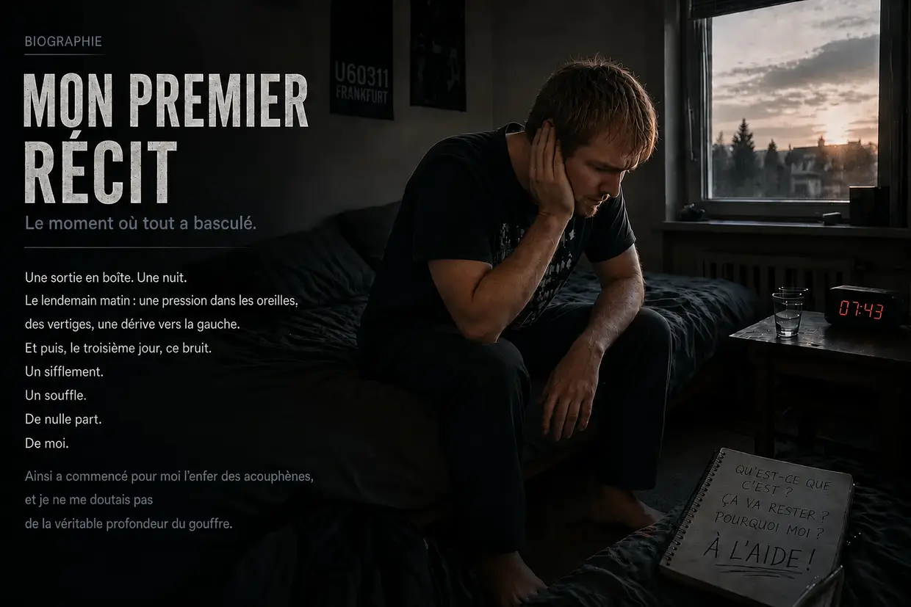
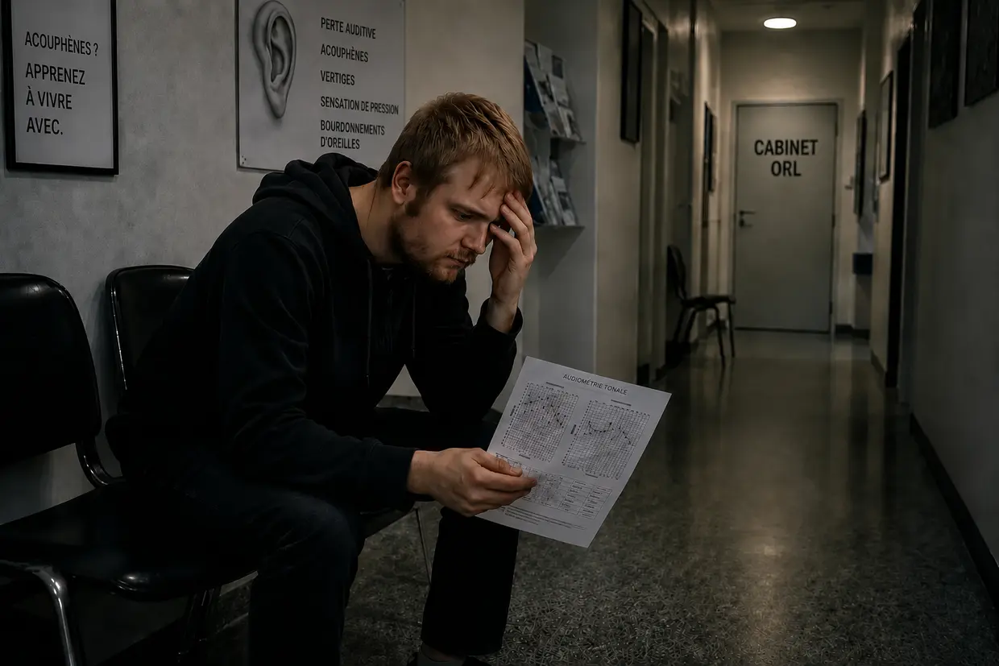
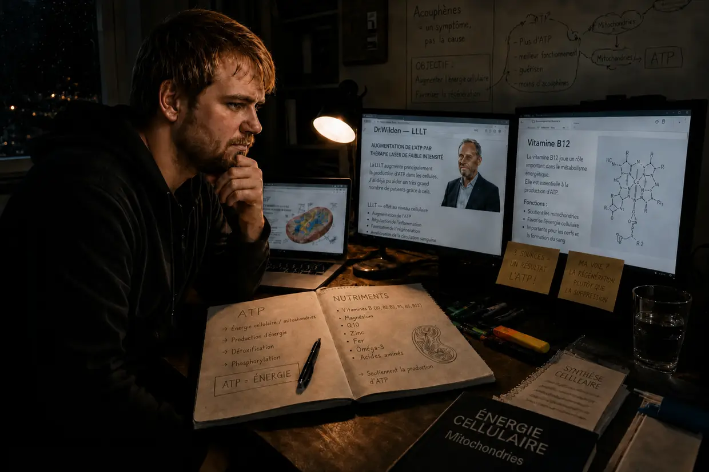
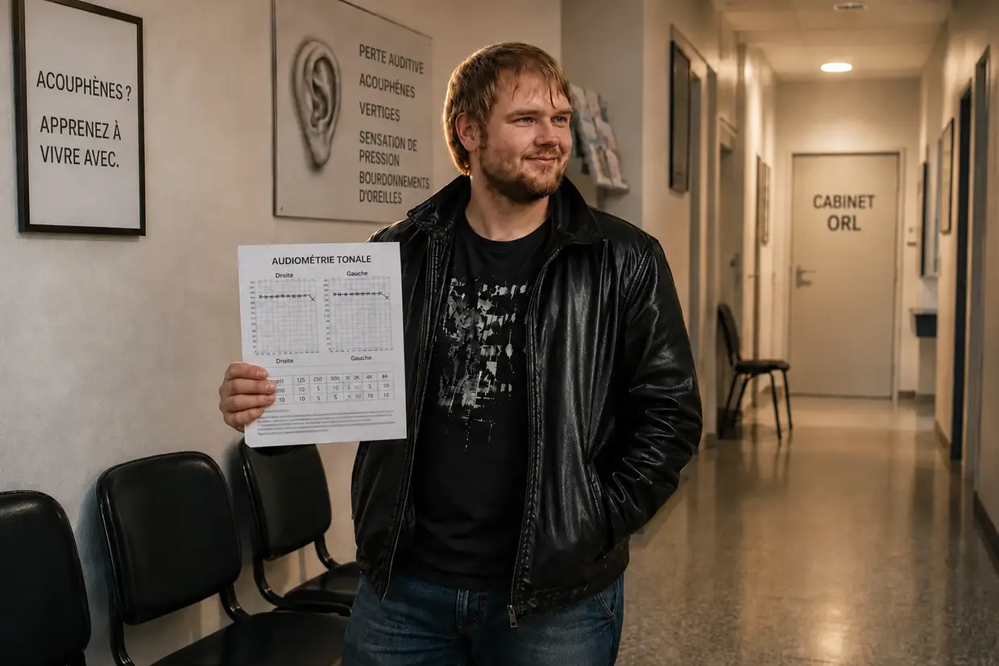

Mon parcours dans l’enfer des acouphènes – partie 1 : la traversée de l’enfer
Bonjour, je m’appelle Dustin Müller. Après avoir moi-même été touché par des acouphènes à plusieurs reprises, j’éprouvais un besoin viscéral de donner vie à cette page. Avec mes années de recherches, de vrais protocoles de biohacking et mes propres expériences, je veux montrer aux autres personnes concernées comment je suis, personnellement, parvenu à une guérison complète. Mais avant de plonger au cœur des mécanismes, je dois raconter comment tout a commencé pour moi. Et ce n’était pas un hasard médical, mais un crash frontal.
Vous cherchez la version courte ? Cette version longue entre dans les moindres détails — les audiogrammes, les consultations ORL, chaque avancée décisive. Si vous préférez une version plus compacte, le récit court est fait pour vous.
Automne 2011 : le corps invincible et la fragilisation préalable
À 23 ans, on déborde d’énergie et on pense que le corps peut tout encaisser. C’est avec cet état d’esprit que je traitais aussi mes oreilles. J’adorais la musique. Pendant des années, je l’ai écoutée au casque si fort que mes parents l’entendaient à travers la porte fermée de ma chambre. Mon système était déjà « cuit », sans que je le sache.
Tout a commencé avec mon cousin. Comme je n’étais encore jamais vraiment allé en discothèque, il m’a proposé de l’accompagner au U60311, à Francfort. J’avais un mauvais pressentiment, mais j’ai tout de même accepté. Dès la descente de l’escalier, j’ai senti à quel point les basses étaient physiquement brutales. Naïvement, une fois à l’intérieur, j’ai choisi ce qui me semblait être la meilleure place — à environ 10 mètres, juste devant les énormes enceintes, l’oreille gauche exactement tournée vers la source du son. C’est l’erreur qui a fait tomber le premier domino.
Le lendemain matin : une paix trompeuse
Dès que la porte s’est refermée derrière nous, j’ai senti une pression folle dans les oreilles — beaucoup plus forte à gauche. Tout semblait étouffé, comme sous l’eau. Mon cousin m’a dit que c’était normal et que cela allait passer. Comme j’étais ivre, je me suis laissé tomber dans mon lit. Le lendemain matin, en essayant de me lever, je suis retombé d’un coup sur l’oreiller — mon système de l’équilibre était démoli, avec une violente dérive mécanique vers la gauche.
Comme j’avais une confiance instinctive, presque absolue, dans les capacités de régénération de mon corps, je le prenais presque avec humour : le temps finira bien par arranger tout ça. Et c’est ce qui semblait se passer : le deuxième jour, la dérive vers la gauche diminuait et la sensation de pression avait presque disparu. J’ai poussé un soupir de soulagement — je pensais m’en être tiré.
Jour 3 : le monstre se réveille
Troisième jour après la discothèque. Je me suis réveillé et j’ai soudain entendu un bruit qui ressemblait au bip d’un réfrigérateur. C’est quoi ce bordel ? J’ai collé ma tête contre le mur. J’ai tendu l’oreille vers la prise électrique. J’ai vérifié l’ordinateur, le réveil. Rien. Puis j’ai plaqué mes mains sur mes oreilles.
Merde. Ça vient de moi. C’est dans ma tête.
Je suis resté de longues minutes sous le choc. C’est quoi, ce truc ? Ça va rester ? Dans l’oreille gauche : un bourdonnement, un souffle, des sirènes et un bip très fort. À droite, à ce moment-là, aucun acouphène perceptible. L’oreille avait elle aussi encaissé tout ce bruit, mais elle était encore silencieuse. Malgré le choc, je me suis dit : ça finira bien par partir.
L’empoisonnement du logiciel (le délai de 14 jours)
En quelques minutes, j’ai trouvé sur Internet les réponses : perte auditive soudaine et lésion de l’oreille interne. Baisse auditive permanente, souvent accompagnée d’acouphènes. Puis est venue la phrase qui m’a glacé le sang : « Il faut traiter dans les 14 jours — sinon tout devient chronique et on le garde à vie. » Sur le forum tinnitus.de, j’ai lu des discussions de personnes qui vivaient avec ce truc depuis cinq ans. Cinq ans ? Putain de merde… Une défaillance physique venait de se transformer en menace psychologique massive.
La trahison en blouse blanche (ma première consultation ORL)

Je suis allé voir mon ORL d’enfance. De l’espoir. Ça y est, la délivrance va arriver. Je lui ai raconté la soirée en discothèque et mes symptômes. Lui, déjà un peu agacé : « Oui, n’y prêtez pas attention. Écoutez un peu de musique pour couvrir les sons. » J’ai insisté : « Mais il faut bien traiter dans les 14 jours, non ? Et est-ce vraiment judicieux de continuer à m’exposer à des sons ? » Lui : « On va d’abord faire une audiométrie. » Sur ces mots, il a quitté la pièce. Ma confiance s’effritait.
L’horreur du silence (l’audiométrie)
Ce n’est qu’en entrant dans la cabine insonorisée que j’ai compris à quel point mon audition était réellement atteinte. Dans ce silence absolu, tout masquage naturel disparaissait — les sons dans mon oreille gauche étaient incroyablement forts. Le test se composait de trois parties : déterminer la fréquence et l’intensité des acouphènes, mesurer l’audition générale et tester la conduction osseuse au niveau du crâne.
Le verdict
Le médecin, compte rendu en main, m’a expliqué que mon audition était endommagée de façon permanente et qu’on ne pouvait rien y faire. Sous le choc, je lui ai demandé quelles étaient mes chances. De nouveau légèrement agacé : « Vous devez apprendre à vivre avec. N’y prêtez pas attention, distrayez-vous, mettez un casque audio. » À ma question absurde — est-ce que je pouvais continuer à aller en discothèque ? — il a répondu : « Oui, cela ne pose aucun problème. » Puis il a pris congé.
Le serment et le trajet du retour
Le chemin du retour a été un véritable enfer. Un poids écrasant. Dans mon désespoir, j’ai brièvement pensé : soit je m’en débarrasse, soit je ne veux plus vivre. Mais une fois rentré chez moi, cette tristesse sans fond s’est brusquement muée en un élan de révolte. Je n’arrive pas à croire qu’aucun médecin en Allemagne ne sache ce que sont les acouphènes. J’ai serré les poings :
« Soit les acouphènes s’en vont, soit c’est moi qui m’en vais. Je ne laisserai pas ce truc dominer ma vie. Je dois chercher moi-même ce qu’on peut faire. »
Le Far West des pistes de solution

J’ai commencé à chercher par moi-même et je me suis retrouvé face à une quantité écrasante de « thérapies » :
- Cortisone et ginkgo : des produits favorisant la circulation sanguine et anti-inflammatoires — cela semblait logique pour aider l’audition à récupérer.
- Mâchoire et nuque (DTM/rachis cervical) : des théories selon lesquelles les tensions déclencheraient les sons. Mais comme mes acouphènes venaient clairement des basses de la discothèque, mon radar à bullshit s’est déclenché.
- TRT et masquage : couvrir avec d’autres sons. Je pouvais réellement réduire mes acouphènes pendant un court moment — mais dès que je coupais le fond sonore, ils revenaient plus agressifs et plus forts. (Aujourd’hui, je sais que chaque nouveau son force les cellules ciliées déjà épuisées à travailler : elles dépensent leur dernier ATP, celui dont elles auraient justement besoin pour guérir.)
- Compléments alimentaires : à l’époque, je me moquais de ces gens. Quels idiots, pensais-je — ils dépensaient en plus de l’argent pour quelque chose que je considérais comme totalement inutile. Jamais je n’aurais imaginé que c’était précisément par cette voie — véritable énergie cellulaire, production d’ATP, bons nutriments — que je finirais par venir à bout de mes acouphènes.
La deuxième consultation ORL : le conseil désastreux
Le matin de mon deuxième rendez-vous ORL, mes acouphènes s’étaient soudain énormément intensifiés — et, cette fois, un bip était aussi clairement perceptible dans l’oreille droite. (Aujourd’hui, je sais que les nouvelles expositions sonores recommandées par le médecin — avec de la musique et du bruit blanc la nuit — avaient de nouveau mis mes cellules à genoux. Mon oreille droite avait elle aussi encaissé tout ce bruit ; après ces nouvelles expositions, un acouphène y était devenu perceptible.) Le deuxième ORL était aimable et encourageant. Il m’a prescrit du ginkgo et recommandé de dormir suffisamment et de faire de l’exercice. À ma question sur le casque audio, il a répondu : « C’est même bénéfique pour vous distraire. » (Du point de vue actuel de la biologie cellulaire, c’était un conseil absolument désastreux.) À ma question sur la chronicisation au bout de trois mois, il s’est contenté de répondre : « Voyons voir… on peut aussi apprendre à les compenser, c’est-à-dire à ne plus les percevoir du tout. » Et revoilà ce bout de phrase qui excluait toute véritable guérison.
La roue de hamster trompeuse
Les jours et les semaines ont ainsi passé. La journée, l’école me distrayait. Le soir, je me réfugiais dans la boucle trompeuse du masquage : musique au casque et fond sonore permanent de bruits de cascade. Cela me permettait de rendre la situation supportable pendant un court moment. Mais, biologiquement, je tournais en rond : avec ce fond sonore, je maintenais mes oreilles épuisées en état de stress permanent. Mes cellules brûlaient leur dernier ATP pour traiter ce bruit artificiel, au lieu de l’utiliser pour la réparation physique. Mode survie à l’état pur.
Le deuxième crash : l’hyperacousie et le salto du vertige
Un matin, une énorme sensation de pression est soudain réapparue dans mon oreille gauche. J’ai essayé de l’ignorer et je suis parti à l’école. Comme je faisais encore confiance aux conseils du médecin, j’ai commis une erreur désastreuse en chemin : j’ai mis mon morceau préféré à fond dans l’autoradio. Si j’avais su ce qui m’attendait encore pendant cette journée de cours, j’aurais fait demi-tour sur-le-champ. Les signes avant-coureurs étaient déjà là. Mais je ne l’ai pas fait : les cours coûtaient de l’argent, alors j’ai continué. (Cette musique très forte a été la goutte de trop pour mes cellules totalement épuisées.)
Pendant la première heure de cours, de fortes distorsions auditives et une hypersensibilité douloureuse aux sons ordinaires sont soudain apparues — l’hyperacousie. (Aujourd’hui, je sais que les « amortisseurs » de mon oreille, les cellules ciliées externes, avaient consommé leur dernier ATP.) Au fil des heures suivantes, la pression dans mon oreille gauche est devenue toujours plus brutale. Puis c’est arrivé : tout mon champ de vision s’est mis à tourner verticalement — comme un demi-salto dans ma tête. Le monde était sens dessus dessous. Après quelques secondes, ma vision s’est normalisée. Il restait un violent vertige avec sensation de tangage, une forte dérive vers la gauche et une audition étouffée à gauche. (L’accumulation d’ions dans mon oreille interne était devenue si massive qu’elle avait submergé l’organe de l’équilibre voisin.)
Paniqué, j’ai essayé de tenir. Dès que la pause a commencé, j’ai pris la fuite. Le trajet du retour était irresponsable : à cause du vertige extrême, je devais corriger ma trajectoire toutes les quelques secondes. Mais je voulais seulement me mettre en sécurité. Ce deuxième crash a été le tournant ultime : je ne peux plus simplement attendre que ça passe.
Les ORL n° 3 et 4 : des pilules au lieu de réponses, le mensonge du son fantôme et l’étiquette psy
Le jour même, j’ai obtenu un rendez-vous d’urgence chez un troisième ORL. Audiométrie, test de l’odorat, puis un test de « vertige positionnel » qui n’a rien changé. (Aujourd’hui, c’est clair : pas de cristaux détachés, mais un hydrops endolymphatique — secouer la tête ne sert à rien dans ce cas.) Une collègue a ajouté son diagnostic : « nouvelle perte auditive soudaine, cela passera dans 14 jours » — ou peut-être des sinus bouchés, de la pure divination à partir des symptômes. Puis le coup de massue : « Vous savez, beaucoup de gens sombrent dans la dépression. Si les symptômes persistent, je peux volontiers vous prescrire des antidépresseurs. » J’étais assis là, je n’en croyais pas mes oreilles. Mon système de l’équilibre s’était effondré, et sa solution, c’était… des psychotropes ? Je me suis juré : jamais.
Chez le quatrième ORL — le « spécialiste » — j’ai raconté toute mon histoire. Au lieu d’aborder le niveau cellulaire, il m’a lancé froidement : « Avez-vous déjà entendu parler de la thérapie cognitivo-comportementale ? Votre problème, c’est que vous vous concentrez trop sur vos troubles auditifs et que vous entretenez ainsi les acouphènes. » J’ai répliqué : « Mais ce son est bien apparu physiquement à cause de la soirée en discothèque ! » Il n’a absolument pas réagi. À ma question sur la cortisone : « Cela n’aurait de sens que pendant les 14 premiers jours. Dans votre cas, il faut partir du principe qu’il s’agit d’un son fantôme. » Pour finir, il m’a de nouveau recommandé une TRT avec des bruits de masquage — puis a coupé court quand je lui ai expliqué que le masquage ne faisait que rendre mes acouphènes plus agressifs. Le système avait capitulé — et m’avait fait porter le chapeau.
Le point le plus bas : isolement et défaillance du système
Le cauchemar a atteint son sommet lors de ma propre fête d’anniversaire (un mois et demi après la perte auditive soudaine). L’hyperacousie et les distorsions auditives me rendaient fou. Mes acouphènes étaient si forts qu’ils couvraient complètement les paroles des autres. Un phénomène bizarre s’y est ajouté : les lettres sonnaient totalement différemment d’avant — un « S » ressemblait à un « F », un « T » à un « D ». Je ne supportais plus cette surcharge sensorielle : j’ai mis fin à ma propre fête d’anniversaire et je me suis enfui chez moi. Dans les jours qui ont suivi, le vertige est devenu si extrême que, par moments, je risquais de tomber — un ensemble de symptômes qui correspond médicalement à la « maladie de Ménière ». J’étais totalement isolé, coupé du monde. Abandonné par la vie et abandonné par les médecins, qui n’avaient fait que me marteler que ma tête déraillait et qu’il me fallait des antidépresseurs.
La première expérience décisive : la preuve contre le mensonge du son fantôme
Comme par hasard, c’est tard, en plein week-end, qu’une infection a provoqué chez moi une inflammation du conduit auditif — j’ai donc dû me traîner aux urgences du CHU de Francfort. L’ORL a pris un minuscule appareil d’aspiration pour aspirer mes conduits auditifs, l’un après l’autre. C’est exactement à ce moment-là qu’a eu lieu l’expérience décisive : lorsque le bruit strident faisait rage dans mon oreille gauche, j’ai senti au même instant les acouphènes de ce côté réagir de façon agressive et explosive à ce vacarme. Puis, dans l’oreille droite : exactement la même chose.
C’était un test A/B parfait sur mon propre corps. Mon raisonnement a fait voler en éclats les affirmations du « spécialiste » : un son fantôme psychologique ne réagit pas au même instant à un bruit purement mécanique dans le conduit auditif concerné ! Pour moi, cette réaction constituait la preuve absolue : la source défaillante se trouvait toujours là, au fond de mon oreille. Sous l’effet du bruit, les cellules criaient immédiatement à l’aide.
Perfusion de cortisone et miracle des bandes de gaze
L’ORL m’a demandé en passant de quand datait ma perte auditive soudaine. Deux mois. Comme le délai magique de trois mois n’était pas encore écoulé, la cortisone valait la peine d’être tentée, selon lui. J’ai immédiatement accepté et je suis resté hospitalisé pour la nuit. Dans mon lit d’hôpital, j’ai continué mes recherches et je suis tombé sur le site personnel d’un patient atteint d’acouphènes. Ce que j’y ai lu était logique du point de vue cellulaire : continuer à s’exposer au bruit aggrave fortement les acouphènes. Il y avait aussi un lien vers le Dr Wilden et sa thérapie au laser de faible intensité, qui stimule de manière ciblée la production d’ATP dans les cellules. Cela collait à 100 % avec ce que j’avais vécu avec ce petit appareil d’aspiration.
Au bout de trois jours, j’ai quitté l’hôpital avec d’épaisses bandes de gaze dans les deux oreilles à cause de l’inflammation des conduits auditifs. Pendant ces quelques jours déjà, j’ai remarqué que mes acouphènes étaient devenus nettement moins forts ! Au début, je pensais que c’était la cortisone. Mais quand j’ai lu sur le site du Dr Wilden à quel point il était essentiel de rechercher activement le silence, ça m’a frappé comme un éclair : pendant des jours, les bandes de gaze avaient fortement isolé mes oreilles des sons ! Jamais un ORL ordinaire ne m’aurait bouché les oreilles à ce point avec des bandes de gaze. Sans le vouloir, j’avais obtenu la preuve que le silence absolu produisait un effet.

Le claquement, la dynamique et le protocole du silence absolu
Quelques jours plus tard, j’ai fait une autre découverte importante. Alors que j’utilisais un petit flacon de crème juste à côté de mon oreille, un claquement violent a soudain retenti. En une fraction de seconde, mes acouphènes se sont mis à hurler — MAIS ils sont revenus très rapidement à leur niveau « normal ». C’est devenu limpide : mes acouphènes n’avaient rien de « figé », ils étaient extrêmement dynamiques ! Ils réagissaient en temps réel au bruit en s’aggravant — et diminuaient quand je recherchais le silence avec rigueur.
J’ai tiré des conséquences radicales. À partir de ce moment-là, je passais délibérément autant de temps que possible dans un silence total. La musique, les films, les rencontres entre amis sont passés du quotidien au rang de rares « récompenses » — et, dans ces cas-là, toujours sans casque, à très faible volume et très brièvement.
Six mois de silence — et la stagnation à 25 %
EFFECTIVEMENT, mes acouphènes diminuaient de mois en mois. Avec le recul, leur volume avait baissé d’environ un quart au bout d’environ huit mois. Bien sûr, je n’ai pas réussi à tenir ce silence total à 100 % : même des trajets indispensables en voiture (200 kilomètres aller-retour) ramenaient les acouphènes à leur niveau sonore élevé. J’avais quasiment ménagé mes oreilles « pour rien » pendant toute une semaine.
Puis quelque chose de frustrant s’est produit : à environ 20 à 25 % d’amélioration, la guérison s’est soudain arrêtée. J’ai poussé mon isolement à l’extrême — j’évitais les conversations, portais constamment des bouchons d’oreille et avais même banni de ma chambre l’horloge murale qui faisait tic-tac. Mais plus rien ne bougeait. Zéro.
Correction de l’atlas, DTM et rachis cervical — l’impasse
J’ai alors eu l’idée de me pencher une nouvelle fois à fond sur la mâchoire, le rachis cervical et les acouphènes. J’ai découvert la DTM, la dysfonction temporo-mandibulaire, et mon dentiste m’a fait faire une gouttière occlusale. Dans un centre orthopédique, on a diagnostiqué chez moi un syndrome cervical et on m’a prescrit du renforcement musculaire avec Med X. J’ai suivi les deux avec une discipline de fer, tout en continuant, en parallèle, à rechercher le silence. Au bout de deux mois, la désillusion est arrivée : les troubles de la mâchoire et du rachis cervical s’étaient améliorés — mais les acouphènes n’avaient ABSOLUMENT PAS CHANGÉ.
Dernier recours : la correction de l’atlas. J’ai roulé 200 kilomètres pour consulter un Heilpraktiker, qui a remis en place mon atlas désaxé au moyen d’un appareil spécial et de manipulations. Après plusieurs semaines, là encore : rien. Le seul truc que ça m’a apporté : le Heilpraktiker m’a recommandé des téguments de psyllium, un mélange d’argiles minérales et des probiotiques pour ma gastrite chronique. Et, effectivement, l’inflammation tenace de ma muqueuse gastrique, qui durait depuis presque un an, a disparu. Ça m’a impressionné : la médecine conventionnelle avait échoué, le Heilpraktiker, lui, avait fait le boulot.
Vitamine B12 — le déclic le plus important (un pur hasard)
À l’époque, mon père souffrait de polyneuropathie. Son médecin généraliste lui avait diagnostiqué une importante carence en vitamine B12 et prescrit des injections. Un soir, quand il s’est injecté une ampoule sous mes yeux, il m’a dit peu après que la douleur avait diminué et qu’il avait de nouveau chaud. Une si petite ampoule rouge pouvait avoir un effet aussi physique ?
J’ai fait des recherches et lu ceci : la B12 est LA vitamine des nerfs. Les végétariens (je l’étais depuis mes 15 ans !) et les personnes souffrant de gastrite chronique (la mienne venait tout juste de s’apaiser) sont particulièrement à risque. J’ai fait une prise de sang chez mon généraliste. Résultat : mon taux était encore dans la norme, mais vraiment tout en bas, juste avant le seuil de carence. Donc non, ce n’était pas une carence confirmée. Le médecin m’a refusé les injections : « encore dans la norme ». Dépité, j’ai quitté le cabinet.
Quand mon père a eu besoin de sa prochaine injection de B12 le soir, j’ai pris mon courage à deux mains et je m’en suis fait injecter une, moi aussi. Important : je déconseille expressément de reproduire cela sans accompagnement médical. Waouh — au bout de quelques minutes, j’ai senti une meilleure circulation sanguine, une chaleur agréable et un esprit plus clair. Je me suis couché détendu.
LE LENDEMAIN MATIN : le miracle absolu. Quelques secondes après mon réveil, je l’ai remarqué immédiatement — mes acouphènes avaient énormément diminué ! D’une amélioration de 25 %, j’étais soudain passé à un bon 40 %. Je suis resté allongé, sidéré, au bord des larmes. Au fil de la journée, ils se sont certes de nouveau aggravés, mais sans revenir à leur ancien niveau. Et le lendemain matin, encore : 40 %.
Sur le site du Dr Wilden, j’ai lu que son laser stimulait de manière ciblée la production d’ATP dans les cellules. Or la B12 est essentielle à cette production d’ATP. DÉCLIC ! Il se peut que je n’aie même pas besoin de ce laser coûteux — je peux augmenter l’ATP grâce à des nutriments ciblés.
Colique biliaire et miracle de la lécithine (mon modèle de la myéline à l’époque)
Pendant que j’attendais des préparations multivitaminées hautement dosées venues des États-Unis, la catastrophe suivante m’a frappé : une colique biliaire provoquée par des calculs. Aux urgences, en pleine nuit, la médecin ne voulait me proposer qu’une opération — me retirer la vésicule biliaire. J’ai refusé et je suis rentré chez moi à mes risques et périls.
De nouveau, recherches sur Internet : une personne concernée racontait que la prise de lécithine en granulés pendant plusieurs mois avait complètement dissous ses calculs biliaires. Je m’en suis procuré dès le lendemain, j’en ai pris 30 g et j’ai réellement senti la pression diminuer dans la partie supérieure droite de mon abdomen. Important : en cas de calculs biliaires, faites-vous impérativement suivre par un médecin. Ceci est mon expérience strictement personnelle dans une situation aiguë, pas un conseil de traitement destiné à d’autres.
Mais le véritable moment fort est arrivé trois jours plus tard : après une injection de B12 et de la lécithine en granulés, un nouveau miracle s’est produit. Le lendemain : 60 à 65 % d’amélioration par rapport à l’état initial ! Après des mois de stagnation. J’ai fait des recherches et me suis alors construit le modèle suivant : la lécithine est un matériau de construction central de la gaine de myéline (l’isolation des nerfs). D’après les recherches que je lisais alors, c’était précisément cette isolation qui était endommagée dans les acouphènes causés par le bruit : « comme lorsque la protection en plastique d’un fil électrique fin est détruite ». Et la B12 serait LA vitamine la plus importante pour régénérer la gaine de myéline. Bon sang — je n’avais donc pas seulement besoin d’ATP, mais aussi de MATÉRIAUX DE CONSTRUCTION ! Aujourd’hui, j’aborde ce mécanisme de façon plus ouverte : je continue de penser qu’une implication du nerf auditif ou de la myéline est possible, mais je ne peux pas l’établir avec certitude dans mon cas. Une voie indirecte est également possible : la choline issue de la lécithine pourrait servir de matière première à la fabrication de l’acétylcholine et, par ce biais, soutenir le système parasympathique, le sommeil profond et la régénération — ou bien la lécithine a accéléré la réparation cellulaire par plusieurs voies à la fois. Peut-être les deux se sont-ils combinés.
La percée : 80 % d’amélioration (le bypass du complexe B)
Avec la lécithine, la préparation multivitaminée et les injections de B12, la guérison progressait — mais les acouphènes ont stagné à environ 70 % d’amélioration. Mon hypothèse : les autres vitamines B n’étaient pas suffisamment absorbées. Je me suis procuré des ampoules de B1 et de B2, ainsi que des comprimés fortement dosés de B3, B5 et B8. Et YES YES YES : une nouvelle diminution de semaine en semaine ! Au cours des 16e et 17e mois après la discothèque, mes acouphènes n’étaient réellement plus qu’à 20 % de leur niveau initial (soit une amélioration de 80 %). Mais ensuite, de nouveau : stagnation.
La guérison définitive : le « Carpet Bombing » des cellules
J’ai fait des recherches comme un possédé et j’en suis arrivé à la conclusion suivante : penser uniquement à la B12 et à la lécithine était beaucoup trop limité. Le corps avait besoin de toute une série d’autres nutriments pour réparer la myéline — comme je le supposais alors — ainsi que pour d’autres processus de reconstruction cellulaire : oméga-3 (DHA/EPA), acides aminés, vitamine C, vitamines liposolubles A/D/E/K et minéraux. Je me suis littéralement gavé : deux fois par semaine, des injections de vitamines B ; trois à quatre fois par semaine, 30 g de lécithine ; chaque jour, des acides aminés en poudre, 3 g d’oméga-3, de la vitamine C fortement dosée, le mélange de minéraux de Life Extension, du magnésium et du zinc de NOW Foods, un verre de LaVita, plus les comprimés multivitaminés du Dr Rath. Un « Carpet Bombing » orthomoléculaire.
Le fade-out et la fin du cauchemar (guérison à 100 %)
Avec le stack complet de nutriments, la dynamique a définitivement changé. Selon mon modèle de l’époque, mon corps disposait désormais de l’énergie de l’ATP ET de toute la palette de matériaux de construction. Combiné à mon « mode moine », cela lui permettait enfin de travailler correctement. Aujourd’hui, je considère l’amélioration de l’approvisionnement énergétique comme le levier principal ; les nutriments fournissaient en parallèle d’importants cofacteurs et matériaux de construction et ont peut-être aussi accéléré le processus. Comme au début : le matin, la batterie cellulaire était complètement rechargée par le sommeil — état optimal. Le soir, avec la fatigue de la journée, les acouphènes redevenaient plus forts. Mais le silence creusait son chemin toujours plus loin dans la journée : au début, le son disparaissait jusqu’à midi. Puis jusqu’à l’après-midi. Les aggravations du soir devenaient toujours plus faibles et plus courtes.
Et puis est arrivé cet ultime matin — je ne l’oublierai jamais. En une fraction de seconde, dès mon réveil, je l’ai senti : dans ma tête, ce n’était pas pareil. Le cœur battant — excité comme un enfant à Noël — j’ai enfoncé mes bouchons bien au fond de mes oreilles. J’ai tendu l’oreille… et il n’y avait absolument RIEN.
Le variateur était définitivement à zéro. Matin, midi et soir — plus rien. Seulement ce silence naturel et paisible que je n’avais plus connu depuis presque deux ans. Les acouphènes avaient disparu. Complètement.
Ce sentiment était indescriptible. Une sensation profonde et chaleureuse de soulagement ultime — et de satisfaction absolue. J’avais gagné : je n’avais pas abandonné, j’avais triomphé des médecins qui me disaient « Apprenez à vivre avec » et, finalement, je n’avais même pas eu besoin de ce laser coûteux. Mon corps avait lui-même réparé le problème — le résultat était réel : mes acouphènes avaient complètement disparu. À l’époque, je m’expliquais le mécanisme ainsi : la gaine de myéline avait été restaurée, la charpente d’actine des cellules ciliées tenait de nouveau, le faux contact était réparé et le cerveau avait coupé son amplificateur d’urgence, le gain central (Central Gain). Aujourd’hui, je considère l’approvisionnement énergétique comme le principal levier de la régénération cellulaire ; je pense surtout aux cellules ciliées, à leurs stéréocils et à leurs membranes cellulaires. Je considère toujours une implication de la myéline ou du nerf auditif comme possible, mais je ne peux pas l’établir avec certitude dans mon cas. La biologie avait gagné.
Ce que j’ignorais encore ce matin-là : de nombreux mois plus tard, une autre réaction en chaîne catastrophique allait précipiter mon corps dans la forme la plus sévère du syndrome de fatigue chronique (SFC). Mais ce savoir-là, je l’ai emporté avec moi dans l’enfer suivant : on peut soi-même guérir même ce qu’on dit « incurable ».
L’histoire ne s’arrête pas là. Ce qui a suivi ce premier triomphe a été le véritable test à haut risque — et la preuve délibérée, folle, que mon modèle biologique fonctionne réellement.

→ Mon histoire, version longue, partie 2 : le test à haut risque